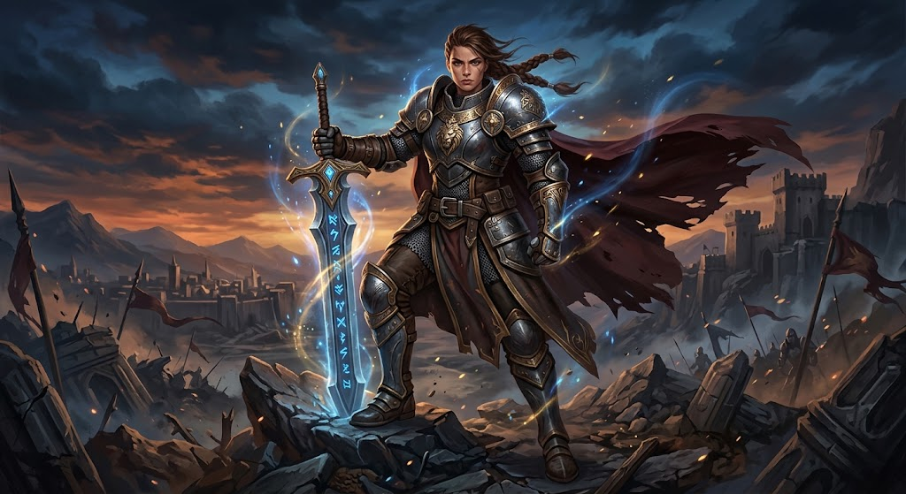
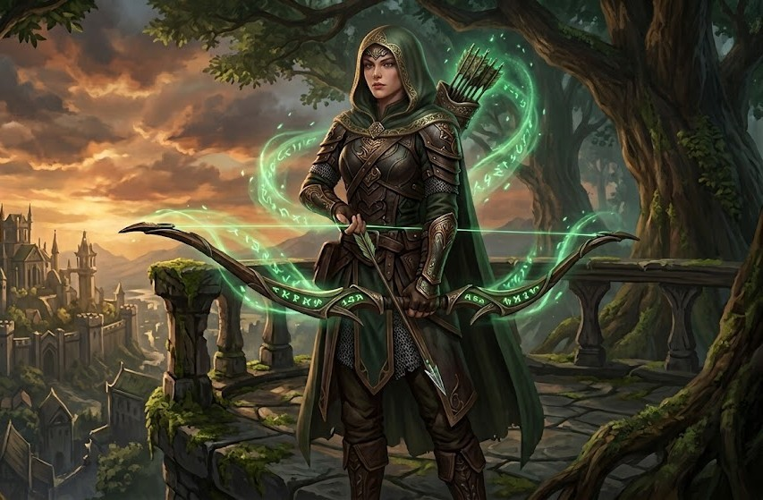
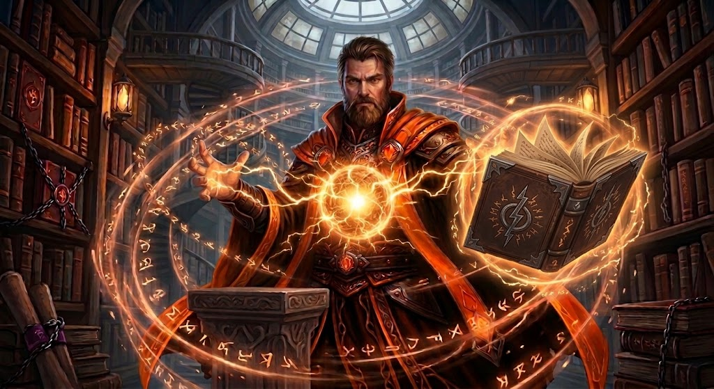
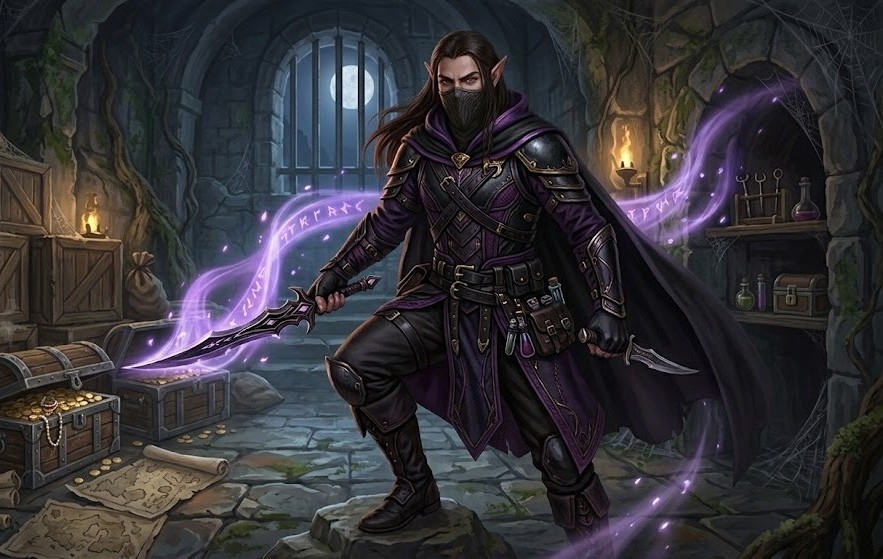
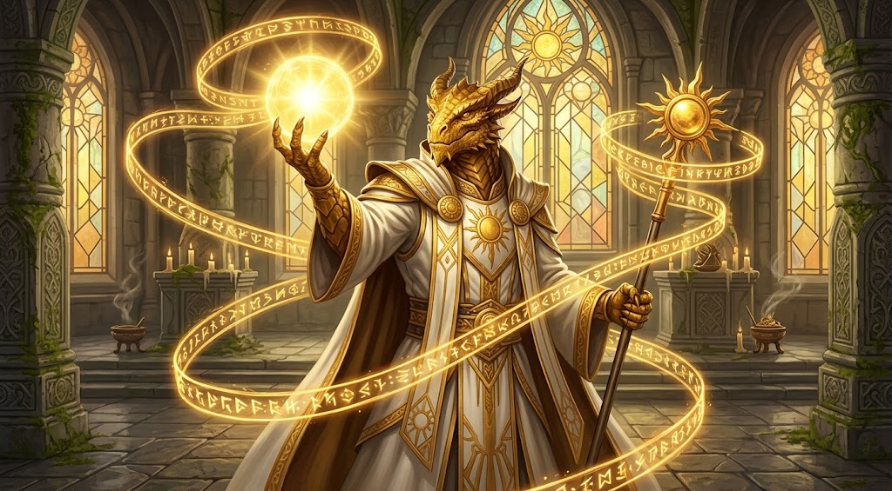

Thalindra
A Lâmina Rubra
Guerreira · Nível 60

Uma guilda, mil lendas
Acompanhe nossos heróis, escolha sua raça e sua classe e junte-se a nós.
Os cinco aventureiros de maior nível da guilda.
A Lâmina Rubra
Guerreira · Nível 60

Olho de Falcão
Arqueira · Nível 57

O Tecelão de Tempestades
Mago · Nível 55

Sombra Silenciosa
Ladino · Nível 52

Portador da Aurora
Clérigo · Nível 50

Contratos abertos pregados no salão da guilda. Escolha uma missão à altura do seu nível.
S
Um wyrm ancião despertou sob as montanhas e devora as caravanas que seguem para o norte.
A
Mortos-vivos deixam a cripta a cada lua nova. Descubra quem os desperta e ponha fim ao ritual.
B
Um mercador paga bem para chegar vivo ao porto pela Estrada dos Enforcados.
D
O boticário precisa de raiz-da-lua antes do inverno. Cuidado com os lobos após o anoitecer.
A guilda recebe aventureiros de todos os povos.
A guilda aceita todas as vocações. Cada caminho cobra seu preço, escolha o seu com sabedoria.
Aço, escudo e coragem na linha de frente.
Domina os arcanos e dobra o fogo à sua vontade.
Olhos de falcão e flechas que nunca erram.
Canaliza a luz divina para curar e proteger.
Caminha nas sombras e abre qualquer fechadura.
Tudo o que um novo aventureiro precisa saber.
Preencha sua ficha de registro.